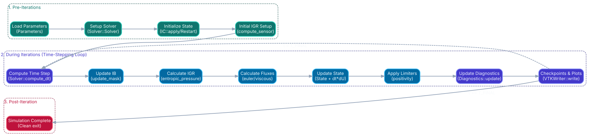
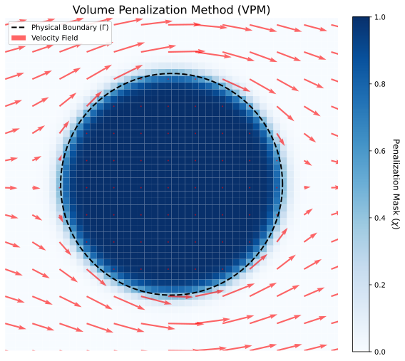
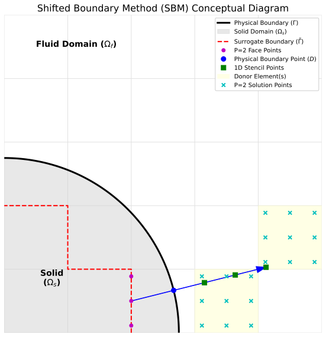

Solver Overview
FR-IGR is a comprehensive, high-order numerical solver engineered for the simulation of compressible fluid dynamics. Specifically targeting the 2D Euler and Navier-Stokes equations, the solver is designed to accurately model complex aerodynamic phenomena ranging from smooth freestream flows to highly dynamic, shock-driven blast waves.
Governing Equations
The foundational physical system modeled by the solver is the compressible Navier-Stokes equations in two dimensions, accounting for the conservation of mass, momentum, and energy. For inviscid simulations, the viscous stress tensor and heat flux terms are disabled, strictly reducing the system to the 2D Euler equations. The continuous physical equations are advanced in time using an explicit Strong Stability Preserving Runge-Kutta (SSP-RK3) temporal discretization, which guarantees strictly bounded variation across discrete time steps.
Core Numerics and Methodology
The solver utilizes the Flux Reconstruction (FR) method (often referred to in literature as the Correction Procedure via Reconstruction, or CPR). FR bridges the gap between traditional finite volume and discontinuous finite element methods. By utilizing tensor-product polynomials defined on Cartesian multi-block grids, FR-IGR maps continuous geometric domains into standardized computational reference elements. This formulation achieves extreme computational efficiency and mathematically rigorous spatial convergence up to degree P3.
Multi-Block Grids & Connectivity Validation
To model multi-dimensional topologies while retaining the high computational efficiency of Cartesian tensor products, the solver segments the domain into structured, multi-block grid configurations (defined in domain.grid). At startup, the solver performs a strict geometric and topological validation pass to guarantee mesh integrity:
- Symmetric 1-to-1 Mapping: Ensures block-neighbor interfaces are mutually symmetric (e.g., if Block A declares Block B as its right neighbor, Block B must reciprocate by declaring Block A as its left neighbor).
- Metric and Resolution Matching: Verifies that shared boundary lengths match and element counts align perfectly along block interfaces to ensure zero-aliasing and strict conservation.
System Architecture
Written natively in modern C++17, the application architecture is highly modular. The simulation state is continuously packed into flattened, 1D contiguous array structures, providing exceptional data locality and mitigating cache misses. Symmetric multidimensional flux evaluations are parallelized using OpenMP, scaling seamlessly across multi-core processor environments.
High-Level Execution Flow

Scroll horizontally to view the full diagram, or click to expand.
Mathematical Architecture
High-Order Numerics: Flux Reconstruction
The solver utilizes the Flux Reconstruction (FR) approach (specifically the FR-DG variant) for high-order spatial discretization. The physical state is represented within each element by a tensor product of 1D Lagrange polynomials defined on Gauss-Legendre quadrature nodes. This formulation yields spectral-like resolution and exceptionally low numerical dissipation, making it highly efficient for capturing complex, smooth wave features on structured grids.
Pitfalls of High-Order Methods
Despite their accuracy, high-order polynomial bases suffer from several major numerical pitfalls:
- Gibbs Phenomenon: Near sharp discontinuities (shocks, contacts), high-order polynomials exhibit severe oscillatory behavior. This causes localized under- and overshoots.
- Positivity Failures: Oscillations near strong shocks can easily drive density (\(\rho\)) or pressure (\(p\)) to negative values. Because the Euler equations are only hyperbolic for physical states (\(\rho > 0, p > 0\)), any negativity instantly destroys the mathematical system, causing solver crashes (NaNs).
- Stiff Timestep Limits: The maximum stable timestep (\(\Delta t\)) scales inversely with the spectral radius of the spatial operator. As the polynomial degree \(P\) increases, the CFL constraint tightens dramatically: \(\Delta t \propto \frac{h}{2P + 1}\), requiring very small steps for high-order runs.
Numerical Limiters
To control high-order oscillations and ensure thermodynamic admissibility without destroying accuracy in smooth regions, the solver employs a multi-tiered limiting scheme:
- Zhang-Shu Positivity Limiter: A bounds-preserving limiter that scales the high-order polynomial coefficients toward the cell-averaged state. The cell average is guaranteed to remain positive if a positive numerical scheme (such as LLF/Rusanov) is used. For each element, a scaling parameter \(\theta \in [0, 1]\) is computed:
The parameter \(\theta\) is chosen via bisection to be the maximum value such that density and pressure remain strictly above a safety floor (\(\epsilon_{\text{pos}} \approx 10^{-10}\)) at all internal solution nodes and face-extrapolated checking points. This preserves conservation while enforcing admissibility.U_limited = \theta * U_local + (1 - \theta) * U_average - Thermodynamic Entropy Limiter: Enforces minimum-preservation on the specific thermodynamic entropy \(s = p / \rho^\gamma\). Scaling toward the cell average occurs if the local entropy at any quadrature point falls below the minimum entropy of its neighbors. This prevents the formation of non-physical expansion shocks, ensuring compliance with the Second Law of Thermodynamics.
Dynamic CFL Stability
To maintain stability while maximizing performance, the solver dynamically computes the timestep \(\Delta t\) at the start of each step. The local acoustic wave speed is evaluated as \(\lambda_{\max} = |u| + c\) (where \(c = \sqrt{\gamma p / \rho}\) is the speed of sound). The global timestep is then constrained by:
$$\Delta t = 0.5 \cdot \text{CFL} \cdot \frac{\min(\Delta x, \Delta y)}{(2P+1) \cdot \max(\lambda_{\max})}$$
Here, the factor of \(0.5\) is a 2D Cartesian safety coefficient, and the \((2P+1)\) term accounts for the tighter stable stability limit of higher-order polynomial bases.
Sigmoid Initial Smoothing
Discontinuous initial conditions (e.g., shock tubes, quadrant-based Riemann problems, or blast waves) trigger immediate, violent Gibbs oscillations in high-order FR representations, leading to instant solver failure. To stabilize the initial step, the solver applies a Sigmoid Smoothing filter to the initial state across discontinuities:
$$f_{\text{smooth}}(x) = \frac{1}{1 + e^{-(x - x_0)/\delta}}$$
The smoothing width \(\delta\) is typically scaled to \(2.0 \cdot \min(\Delta x, \Delta y)\). This mitigates starting transients while preserving a sharp, physically representative profile.
Isotropic Gradient Regularization (IGR)
Isotropic Gradient Regularization acts as a sub-grid scale artificial viscosity mechanism (Entropic Pressure) to smooth out under-resolved gradients. Viscosity is computed by evaluating a Helmholtz-type smoothing equation:
$$\left( I - \epsilon \nabla \cdot \left( \frac{1}{\rho} \nabla \right) \right) \Sigma = S$$
Where \(S\) is the raw shock sensor source term, \(\Sigma\) is the smoothed entropic pressure field, and \(\epsilon \propto h^2\) is the diffusion coefficient. The solver provides two pathways to evaluate this equation:
- Parabolic IGR (Default & Practical): Treats the entropic pressure as a transient variable, evolving it explicitly alongside the physical state: \(\partial \Sigma / \partial t = (\Sigma_{\text{eq}} - \Sigma) / \tau\). The diffusion term is discretized using the Bassi-Rebay 2 (BR2) viscous flux formulation and advanced using a forward-Euler sub-stepping routine. This is computationally efficient and fits naturally into explicit solver loops.
- Elliptic IGR (Minor & Expensive): Solves the steady-state Helmholtz equation implicitly at each step using a Symmetrized Alternating Direction Implicit (ADI) matrix solver. The ADI method executes both an \(XY\) and a \(YX\) directional pass and averages the fields: \(\Sigma = 0.5(\Sigma_{XY} + \Sigma_{YX})\) to eliminate directional bias. While mathematically clean, the implicit solve is computationally expensive and generally too slow for practical applications.
Pressure-Bounded Source Capping
In simulations with extreme shocks (e.g., blast waves reflecting off walls), the raw sensor term \(S\) can spike, injecting excessive artificial viscosity that unphysically depletes local internal energy and causes solver crashes. To prevent this, the solver applies a **Pressure-Bounded Cap** directly to the shock sensor source term:
$$S = \min(S_{\text{raw}}, C \cdot p)$$
Where \(p\) is the local thermodynamic pressure, and \(C\) is a tuning coefficient (typically \(1.0\)). Capping the source term rather than the final viscosity field \(\Sigma\) is mathematically elegant: it allows the Helmholtz operator to naturally diffuse the bounded viscosity ahead of the shock wave, providing the necessary pre-conditioning for numerical stability.
Immersed Boundary Methods
To avoid the high computational cost and grid-generation complexity of body-fitted unstructured meshes for complex geometries (cylinders, airfoils), FR-IGR implements two distinct Cartesian-mesh Immersed Boundary (IB) formulations. These overlay the solid geometry directly onto the Cartesian grid via a level-set Signed Distance Function (\(\phi(x,y)\)).

Volume Penalization Method (VPM)

Shifted Boundary Method (SBM)
1. Volume Penalization Method (VPM)
The Volume Penalization Method models the solid geometry as a highly porous medium. The governing momentum and energy equations are modified by adding a stiff penalization source term \(S_p\):
$$S_p = -\frac{\chi}{\eta} (u - u_s)$$
Where:
- \(\chi(x, y)\) (Solid Mask Function): Evaluated using the Signed Distance Function \(\phi\). \(\chi = 1\) inside the solid (\(\phi < 0\)) and \(\chi = 0\) in the fluid. To prevent stair-stepping, a smoothed Heaviside interface can be used, regularizing the boundary over a width of \(\approx 1.5 \Delta x\).
- \(\eta\) (Permeability / Porosity): A tiny positive penalty parameter (typically \(10^{-7}\)). As \(\eta \to 0\), the local fluid velocity \(u\) is aggressively forced to match the solid wall velocity \(u_s\).
Analytical Integration (Stiffness Mitigation)
Because the penalization source term is extremely stiff, standard explicit time integration (e.g., Runge-Kutta stages) requires a timestep restricted by \(\Delta t < \eta\), making the simulation impossibly slow. To bypass this, FR-IGR solves the penalization term **analytically** over each Runge-Kutta stage. The velocity update is integrated as:
$$u^{k+1} = u^k \cdot e^{-\chi \Delta t / \eta} + u_s \left( 1 - e^{-\chi \Delta t / \eta} \right)$$
This exact analytical update guarantees absolute stability and strictly enforces the solid velocity boundary condition inside the mask without imposing any timestep penalty on the overall CFL limit.
Caveats and Limitations of VPM
- Diffuse Interface: Smoothing the mask function \(\chi\) smears the solid boundary across cell lines. This creates a diffuse interface, which is poorly suited for computing localized surface diagnostics like skin friction or wall pressure distributions.
- First-Order Local Accuracy: Regardless of the polynomial degree \(P\) of the background mesh, the spatial accuracy drops locally to \(\mathcal{O}(h^1)\) in the vicinity of the penalized boundary.
- Parameter Sensitivity: Selecting \(\eta\) requires a trade-off. Too large a value allows fluid to physically penetrate the solid, while too small a value can introduce round-off errors and numerical stiffness in multi-physics couplings.
2. Shifted Boundary Method (SBM)
The Shifted Boundary Method preserves the high-order spatial accuracy of the Flux Reconstruction method. Instead of penalizing the domain, SBM shifts the physical boundary condition from the true surface (\(\Gamma\)) to a nearby **surrogate boundary** (\(\tilde{\Gamma}\))—composed of the faces of the Cartesian cells immediately adjacent to the physical interface.
Mathematical Operations and Ray Extrapolation
For every quadrature node on the surrogate boundary, a 1D normal ray is cast along the level-set gradient (\(\nabla \phi\)) toward the true physical boundary to identify the boundary point \(D\). The ray is then extended outward into the fluid domain to construct a 1D interpolation stencil consisting of \(P+1\) donor points:
- Lagrange Extrapolation: Evaluates the high-order 2D solution polynomial at the coordinates of the fluid donor points. Using these values along with the prescribed boundary condition at \(D\), a 1D Lagrange polynomial is constructed along the ray and extrapolated back to the surrogate face node to yield the surrogate state \(u_{\text{sb}}\).
- Donor Interval Scaling: To control the Lebesgue constant (interpolation amplification factor) and prevent Runge's phenomenon (wild polynomial oscillations during extrapolation), the donor stencil interval is scaled dynamically:
This keeps the donor nodes well-spaced relative to the boundary distance \(D\).dL = IB_DL_SCALE * h * sqrt(2.0) - Positivity Limiter on SBM Faces: High-order extrapolation near strong gradients can occasionally produce unphysical negative densities or pressures. The solver enforces strict positivity constraints on the extrapolated boundary state, clamping negative states to a safety floor (
POS_LIMITER_EPS) and incrementing the diagnostic counters.
Caveats and Limitations of SBM
- Runge's Phenomenon: Extrapolating polynomials of degree \(P \ge 2\) from closely spaced donor points to the surrogate face is mathematically ill-conditioned. If the geometric configuration is poor, the SBM state can fluctuate wildly, leading to numerical instabilities.
- Lebesgue Constant Sensitivity: If donor points lie in cells with high gradients or near other boundaries, small errors in the donor states are heavily amplified by the Lagrange weights, creating spurious oscillations.
- Thin Geometries and Overlapping Flags (Constraint 3.c): In thin geometries (e.g., trailing edges of airfoils or thin plates), surrogate boundary cells from opposing faces can overlap. If unmanaged, surrogate face flags will overwrite each other. The solver provides **Colombo Constraint 3.c** to automatically disable conflicting flags in thin cells. However, this must be disabled for solid airfoils to prevent "holes" in the solid boundary definition.
Configuration & Gridding
The solver is initialized dynamically at runtime without recompilation by reading two plaintext configuration files:
inputs.dat (parameterizing physics and numerics) and domain.grid (defining spatial topology).
Running the Simulation
The solver execution is orchestrated via the run.sh wrapper script. The solver supports two distinct runtime output interfaces:
- Interactive TUI Dashboard (Default): Running
./run.shautomatically compiles the code and launches a terminal user interface (TUI) monitor (tui.py). This interface displays real-time solver steps, progress, wave speeds/CFL diagnostics, SBM extrapolation boundary checks, and active warning feeds. It exposes interactive controls:[S](Stop): Stop the solver execution cleanly, flushing all diagnostic datasets and writing the final state.[R](Restart): Gracefully shut down the active run, parse the latest written checkpoint file and simulation time frompv_outputs/solution.pvdand automatically update theRESTART_FILEandRESTART_TIMEfields ininputs.dat, then compile and resume the simulation from the checkpoint (or from $t=0.0$ if no checkpoints exist), clearing previous warning/diagnostic panels.[C](Clean Restart): Gracefully shut down, resetRESTART_FILEandRESTART_TIMEininputs.datto empty/0.0 values, execute a clean build (callingmake cleanallto wipe all previous build files and simulation outputs), and start the simulation fresh from scratch ($t=0.0$), clearing the warning/diagnostic fields.[E](Edit): Suspend raw terminal mode and launch an in-place editor (using the$EDITORenvironment variable, falling back tovimthennano) to modify the configuration file (inputs.dat) directly, automatically reloading the configuration changes upon exit.[K](Kill): Send a SIGKILL signal to forcibly terminate the solver processes if unresponsive.[Q](Quit): Exit the TUI monitor, offering to stop the running solver process or detach and keep it running in the background.
- Headless Mode (Standard Redirection): Running
./run.sh -headlessbypasses the dashboard and executes the solver headlessly. Standard output and standard error streams are redirected toout.logwithout buffer delays (enabling monitoring via tools liketail -f out.log). - TUI Monitor Attachment: Running
./run.sh -attach(orpython3 tui.py --attach) launches the TUI in monitor-only mode. It automatically finds an independently runningfr_solverprocess, attaches to it, reads the history ofout.log, and provides live monitoring and control capabilities without spawning duplicate instances.
Headless Shutdown Trigger
When running headlessly, execution can be cleanly interrupted at any time by creating a file named STOP in the simulation directory. The solver detects this trigger, deletes the STOP file, writes the final state checkpoint files, and exits gracefully with code 0.
Parameter Configuration (inputs.dat)
inputs.dat is parsed using a standard INI-format syntax. It exposes comprehensive control over the simulation environment. Users can reference the comprehensively documented inputs_example.txt file in the root directory for a full template of available configurations and default parameters. Key sections include:
- [Physics]: Defines macroscopic constants (
GAMMA), freestream initialization constraints, and the target initial condition scenario (e.g.,BLAST,SINE_WAVE,RIEMANN_2D_C3). - [Solver]: Dictates core numerics, including the element polynomial degree (
P_DEG), Courant number (CFL), end simulation time (T_FINAL), andNUM_THREADS. - [NavierStokes]: Configures physical viscosity via the Reynolds number (
RE), Prandtl number (PR), and reference Mach number. - [IO] & [Probes]: Granular control over output frequencies for VTK snapshot plots, exact multi-block restart checkpoints, L2 residual tracking, and explicit spatial point probes.
- [ImmersedBoundary]: Constructs dynamic or static geometries using
IB_SHAPE. Supports standard circular cylinders, 4-digit NACA airfoils, and highly customized piecewise multi-polygon boundaries evaluated through a dynamic timeline (IB_Q_TIME_MAP).
Domain Gridding (domain.grid)
Spatial discretization is defined using a block-structured Cartesian approach. The domain.grid file establishes individual, contiguous blocks and declares the mapping connections between their faces.
An example definition for [Block0]:
[Block0]
N_ELEM_X = 20 # Elements in X direction
N_ELEM_Y = 20 # Elements in Y direction
X_MIN = 0.0 # Left boundary coordinate
X_MAX = 1.0 # Right boundary coordinate
Y_MIN = 0.0 # Bottom boundary coordinate
Y_MAX = 1.0 # Top boundary coordinate
BC_L = CHARACTERISTIC:1.0:0.0:0.0:1.0
BC_R = 1:L
BC_B = 0:T
BC_T = 0:BBoundary Condition Specifications
Block edges are assigned boundary conditions using specific string identifiers. Standard physical constraints include:
OUTFLOW_SUPERSONIC: Simple transmissive ghost-state.WALL: Reflective slip-wall.WALL_NOSLIP:T: Viscous adiabatic (or isothermal at temperature T) no-slip boundary.WALL_MOVING:V: Translating boundary with tangential velocity V.CHARACTERISTIC:rho:u:v:p: Riemann-invariant non-reflecting far-field boundaries computed against the reference state.TOTAL_PRESSURE_COMP:Pt/STATIC_PRESSURE:P: Subsonic backpressure specifications.
Multiblock Connectivity: Inter-block data transfer is established using a face-mapping syntax ID:FACE.
For example, BC_R = 1:L connects the right boundary of the current block to the left boundary of Block 1.
Periodic boundaries are configured effortlessly by mapping a block's faces to itself (e.g., BC_B = 0:T).
Testing Structure
The testing infrastructure is built upon the single-header doctest framework.
The suite is logically divided into isolated unit tests targeting mathematical invariants, and integrated regression tests verifying system-level properties.
Execution via Makefile
Tests are executed through specific build targets, ensuring isolated testing environments without dependencies on external binaries.
# Execute the unit test suite
make test-unit
# Execute the regression test suite
make test-regressionA shell script wrapper (tests/run_tests.sh) automates the build and execution process, returning standard exit codes intended for Continuous Integration (CI) systems.
Integration Fixtures
Regression tests utilize parameter fixtures located in the tests/fixtures/ directory.
Each fixture defines a minimal domain.grid and inputs.dat to establish a deterministic testing state.
Examples include blast_walls for testing strong shocks, and sine_periodic for smooth, differentiable flows suitable for algorithmic convergence checks.
Test Coverage
The suite comprises 45 isolated test files (27 unit tests and 18 regression tests), validating numerical behavior across thousands of assertions per execution pass.
Unit Test Coverage
| Component | Target File | Verification Scope |
|---|---|---|
| Polynomial Basis | test_basis.cpp |
Exactness of Radau correction endpoints, Gauss-Legendre quadrature weights, and differentiation matrix exactness. |
| Data Structures | test_state.cpp |
1D flat-array indexing, initialization boundaries, and zero-aliasing verification. |
| Inviscid Fluxes | test_euler_flux.cpp |
X/Y sweep directionality, symmetry of fluxes, and integration of the IGR specific viscosity terms. |
| Riemann Solvers | test_riemann.cpp |
Upwinding behavior, Sod shock tube exactness limits, and maximum wave speed estimates. |
| Linear Solvers | test_thomas.cpp |
Tridiagonal Matrix Algorithm correctness against large identically-banded systems. |
| Geometry Constraints | test_ib_geometry.cpp |
Signed Distance Field (SDF) approximations, gradient norms, and temporal mappings for dynamic masks. |
Regression Test Coverage
| Category | Target File | Verification Scope |
|---|---|---|
| Spatial Convergence | test_spatial_convergence.cpp |
Computes L2 error norms across refined meshes to assert rigorous theoretical spatial accuracy limits for P1 and P2 elements. |
| Temporal Convergence | test_rk3_convergence.cpp |
Verifies global error reduction scaling matches exactly O(dt^3) for the SSP-RK3 integrator. |
| Global Conservation | test_conservation.cpp |
Integrates a high-pressure blast expansion to ensure total mass and total energy invariant preservation up to machine precision. |
| Physics Pathways | test_igr_elliptic.cpp |
Verifies ADI solver convergence and artificial viscosity distribution stability natively inside the main execution loop. |
| Viscous Pathways | test_navier_stokes.cpp |
Validates BR2 viscous flux discretization using freestream and Couette flow constraints. |